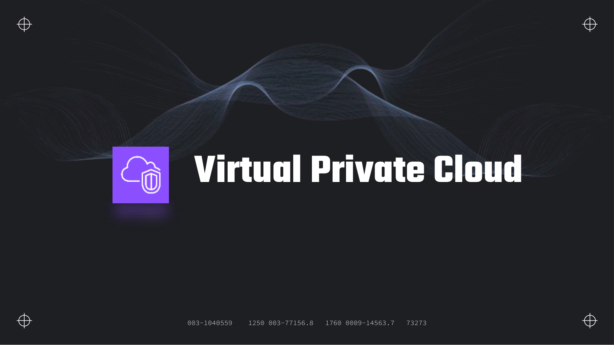
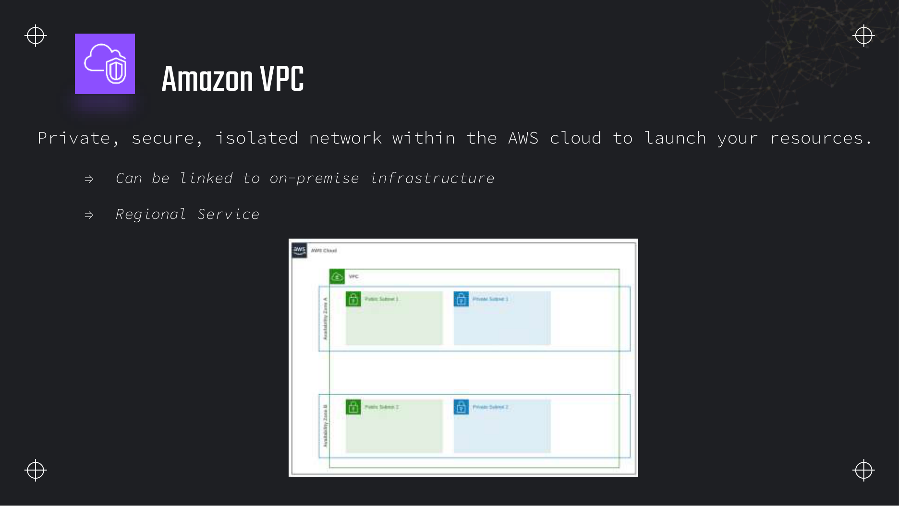
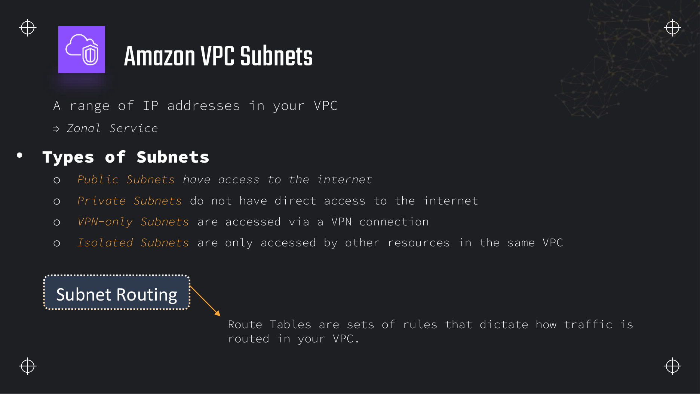
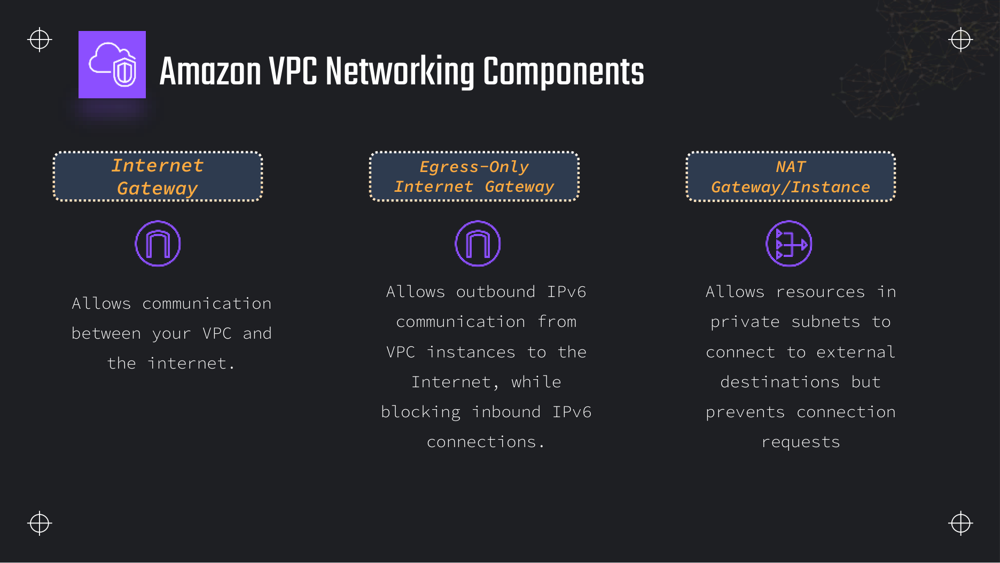
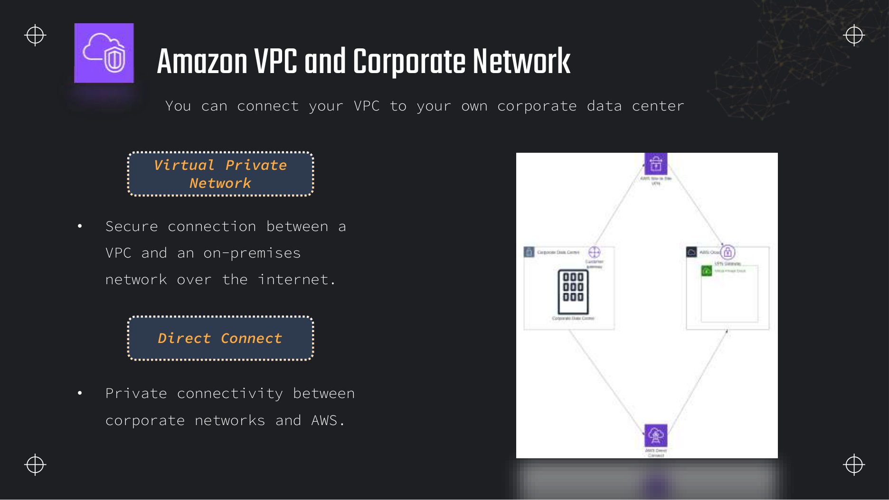
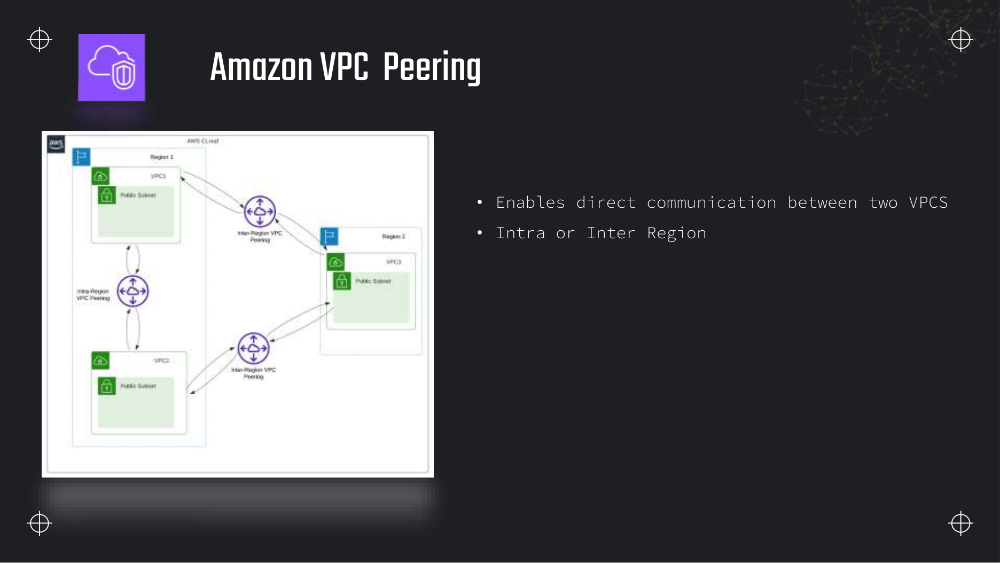
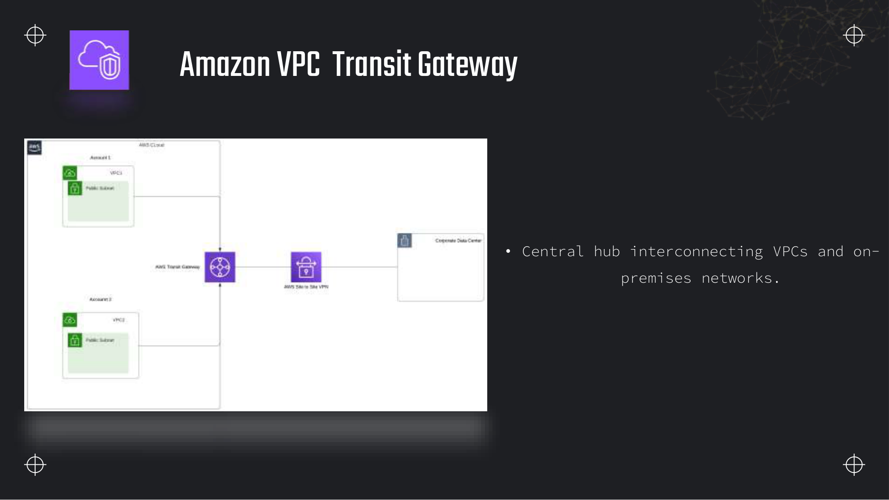
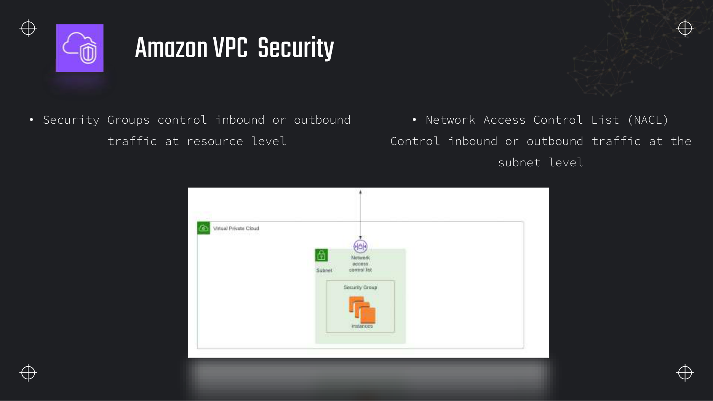
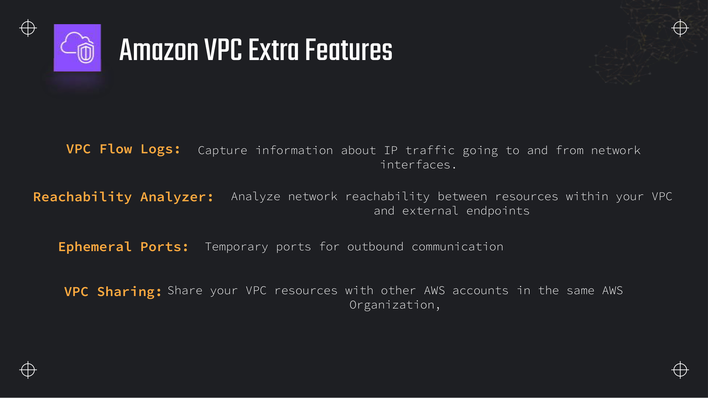

Lectures in this section
Each lecture links to the notes that cover it. Labs reuse bucket dea-lab-<initials>-<random> in us-east-1.
- Virtual Private Cloud overview ~5:00 Slides 670–671
- Subnets, CIDR sizing and route tables ~6:00 Slide 672
- Internet gateway, NAT gateway and egress-only gateway ~5:00 Slide 674
- Site-to-Site VPN and Direct Connect ~4:00 Slide 676
- VPC peering ~3:00 Slide 677
- Transit Gateway ~3:00 Slide 678
- VPC endpoints: gateway versus interface (PrivateLink) ~7:00
- Security groups versus network ACLs ~6:00 Slide 680
- VPC Flow Logs and extra VPC features ~5:00 Slide 682
Virtual Private Cloud (VPC)
An Amazon Virtual Private Cloud is a private, isolated network inside AWS where you launch resources with IP addresses you control. For a data engineer it is the boundary that decides whether a Glue connection, a Lambda function, or a Redshift cluster can reach S3, a corporate Oracle database, or the public internet — and what that reach costs.


Regional scope and default VPC
- Regional service: a VPC exists in one AWS Region. Subnets inside it are zonal — one subnet maps to exactly one Availability Zone.
- Can link to on-premises: via Site-to-Site VPN or AWS Direct Connect, so a Glue job can read from an on-prem Oracle instance without exposing that database to the internet.
- Default VPC: every new account gets a VPC per region with a
/16CIDR, one public subnet per AZ, an internet gateway attached, and a main route table sending0.0.0.0/0to the IGW. Labs often use the default VPC; production data platforms use custom VPCs with private subnets only.
Two-AZ VPC — where data pipeline resources typically sit
Subnets and CIDR sizing
A subnet is a range of IP addresses carved from the VPC CIDR block. Route tables attached to a subnet decide whether traffic to the internet, to S3, or to another VPC goes through an internet gateway, a NAT gateway, a VPC endpoint, or a peering connection.

Subnet types
| Type | Internet route | Typical data-engineering use |
|---|---|---|
| Public | Route to internet gateway (0.0.0.0/0 → igw) | NAT gateway, public ALB, bastion host for emergency DB access |
| Private | No direct IGW route; outbound via NAT or VPC endpoints | Glue connections, Lambda with VPC config, Redshift, RDS, OpenSearch |
| VPN-only | On-premises reachable via VPN/DX; no public internet | Hybrid ETL reading from corporate ERP |
| Isolated | No internet, no VPN — VPC-internal only | Strictly internal staging between two pipeline tiers |
CIDR blocks and the five reserved IPs
VPC CIDR must be between /16 and /28. Common production choice: 10.0.0.0/16 with /24 subnets (256 addresses each). AWS reserves five IP addresses per subnet that you cannot assign:
- First address — network address
- Second address — VPC router
- Third address — DNS server (
AmazonProvidedDNSat VPC CIDR + 2) - Fourth address — reserved for future use
- Last address — broadcast (unused in AWS but reserved)
A /24 subnet therefore has 251 usable IPs, not 256. Size subnets for ENI growth: each Glue connection, Lambda in a VPC, and RDS instance consumes at least one private IP.
What makes a subnet public
A subnet is public when both conditions hold:
- The VPC has an internet gateway attached.
- The subnet's route table has
0.0.0.0/0 → igw-xxxxxxxx(and for IPv6,::/0 → eigwor IGW as appropriate).
Auto-assign public IPv4 on launch is a separate setting — an instance can get a public IP only if the subnet is public. Redshift and RDS in private subnets should have this disabled; access comes through security groups and optionally AWS PrivateLink, not a public IP.
VPC networking components

Internet gateway (IGW)
Allows bidirectional communication between resources with public IPs and the internet. Attach one IGW per VPC. Resources in public subnets use it for inbound (e.g. SSH to a bastion) and outbound traffic.
NAT gateway versus NAT instance
| Property | NAT gateway (managed) | NAT instance (EC2) |
|---|---|---|
| Availability | Managed, highly available per AZ | You patch, scale and fail over |
| Bandwidth | Up to 100 Gbps | Depends on instance type |
| Placement | Must be in a public subnet | Same |
| Cost | ~$0.045/hour per AZ + $0.045/GB processed | EC2 instance cost + operational time |
| Exam answer | Default choice — least operational overhead | Legacy; only if question demands lowest fixed cost at tiny scale |
Private subnet route table: 0.0.0.0/0 → nat-xxxxxxxx. Glue jobs that download JARs from Maven Central, call external APIs, or reach AWS services without a VPC endpoint traverse the NAT — and bill per gigabyte.
S3 access from a private subnet — gateway endpoint (free) versus NAT (costs per GB)
Egress-only internet gateway
IPv6 only: allows outbound IPv6 from instances in a VPC while blocking inbound IPv6 connections initiated from the internet. Irrelevant for most S3/Glue pipelines unless you run dual-stack.
Connecting a VPC to a corporate data centre

| Option | Path | Latency / bandwidth | When a data engineer picks it |
|---|---|---|---|
| Site-to-Site VPN | Encrypted tunnel over the public internet between customer gateway and virtual private gateway or Transit Gateway | Variable; up to 1.25 Gbps per tunnel | Quick hybrid setup, proof-of-concept DMS tasks, lower cost |
| AWS Direct Connect | Private dedicated fibre or partner connection into AWS | Consistent; 1 Gbps–100 Gbps ports | Large nightly batch loads from on-prem warehouse, predictable latency |
Both terminate in your VPC (or Transit Gateway). Route tables must advertise the on-premises CIDR; security groups and NACLs still control which pipeline hosts may reach which source systems.
VPC peering

- Direct private IP routing between two VPC CIDR blocks — traffic stays on the AWS network.
- Intra-Region or inter-Region peering is supported; inter-Region peering has higher latency and separate pricing.
- Non-transitive: if Account A peers with B and B peers with C, A cannot reach C through B.
- CIDR overlap forbidden: both VPCs must have non-overlapping CIDR blocks.
Data-engineering use: peer the analytics VPC (Redshift, Glue) with a shared-services VPC (central logging bucket, enterprise KMS). Cross-account peering requires acceptance and IAM trust on both sides.
Transit Gateway

- Central hub connecting VPCs, VPN, and Direct Connect attachments across accounts and regions (with inter-Region peering between Transit Gateways).
- Route tables on the TGW control which attachments can talk to which — segment prod data VPC from dev.
- Scales better than peering: N VPCs need N attachments, not N×(N−1)/2 peering links.
VPC endpoints
VPC endpoints let resources in private subnets reach AWS services without traversing the internet or a NAT gateway. The exam tests two types constantly; confusing them is one of the most common wrong answers on Domain 4.
| Property | Gateway endpoint | Interface endpoint (PrivateLink) |
|---|---|---|
| Services | S3 and DynamoDB only | Most other AWS APIs — KMS, Secrets Manager, Glue, Kinesis, STS, SNS, etc. |
| Implementation | Route-table entry to a prefix list (pl-xxxxxxxx) | ENI with private IPs in your subnet |
| DNS | Uses existing S3/DynamoDB public DNS names; route hijacks to AWS network | private-dns-enabled maps service.region.amazonaws.com to the endpoint ENI |
| Cost | Free — no hourly charge | ~$0.01/hour per AZ + data processing |
| Security | Endpoint policy (IAM + bucket policy still apply) | Security group on the endpoint ENI |
| Exam trigger | "Glue job cannot access S3 in private subnet" | "Lambda needs KMS/Secrets Manager without internet" |
aws ec2 create-vpc-endpoint \
--vpc-id vpc-0abc123def4567890 \
--service-name com.amazonaws.us-east-1.s3 \
--route-table-ids rtb-private-az-a rtb-private-az-b \
--policy-document '{
"Statement": [{
"Effect": "Allow",
"Principal": "*",
"Action": "s3:*",
"Resource": "*"
}]
}'
# Interface endpoint example (KMS) — needs subnets + security group
aws ec2 create-vpc-endpoint \
--vpc-id vpc-0abc123def4567890 \
--vpc-endpoint-type Interface \
--service-name com.amazonaws.us-east-1.kms \
--subnet-ids subnet-private-az-a subnet-private-az-b \
--security-group-ids sg-endpoint-kms \
--private-dns-enabledSecurity groups versus network ACLs

| Property | Security group | Network ACL (NACL) |
|---|---|---|
| Scope | ENI / resource (instance, RDS, Lambda ENI, Redshift) | Subnet — all ENIs in the subnet |
| State | Stateful — return traffic automatically allowed | Stateless — must allow inbound and outbound separately |
| Rules | Allow only — no deny rules | Allow and deny — numbered rules, lowest number wins |
| Evaluation | All rules evaluated before deciding | Processed in order until a match |
| Default | Default SG: allow outbound, deny inbound except same SG | Default NACL: allow all in and out |
| Exam gotcha | Reference another SG as source — Glue → RDS pattern | Block a specific IP range at subnet edge |
Security groups referencing other security groups
Instead of opening RDS to a CIDR range, add an inbound rule: port 5432 (PostgreSQL) or 5439 (Redshift) from security group sg-glue-workers. When the Glue job's ENIs carry that security group, they can reach the database. The database stays in a private subnet with no public IP. Same pattern for Lambda → RDS, EMR → OpenSearch, and DMS replication instance → source database.
# RDS security group: allow Glue workers on PostgreSQL port
aws ec2 authorize-security-group-ingress \
--group-id sg-rds-analytics \
--protocol tcp \
--port 5432 \
--source-group sg-glue-etl-workers
# Outbound on the Glue SG is usually allow-all by default;
# if locked down, add egress to sg-rds-analytics on 5432 as well.VPC Flow Logs and extra features

VPC Flow Logs
Capture IP traffic metadata for a VPC, subnet, or ENI. Default format includes account, action (ACCEPT/REJECT), bytes, dstaddr, dstport, interface-id, protocol, srcaddr, srcport, and timestamps. Custom formats can add pkt-srcaddr, vpc-id, subnet-id, and tcp-flags.
Destinations:
- Amazon CloudWatch Logs — quick search with Logs Insights; good for live debugging.
- Amazon S3 — cheap long-term storage; partition by date for Athena queries.
- Kinesis Data Firehose — stream to S3, OpenSearch, or Splunk for near-real-time dashboards.
CREATE EXTERNAL TABLE IF NOT EXISTS vpc_flow_logs (
version int,
account string,
interface_id string,
srcaddr string,
dstaddr string,
srcport int,
dstport int,
protocol bigint,
packets bigint,
bytes bigint,
start bigint,
end bigint,
action string,
log_status string
)
PARTITIONED BY (dt string)
ROW FORMAT DELIMITED FIELDS TERMINATED BY ' '
LOCATION 's3://dea-lab-ab-4821/logs/vpc-flow/'
TBLPROPERTIES ("skip.header.line.count"="1");
-- Rejected connections to RDS/Redshift ports in the last partition
SELECT dt, srcaddr, dstaddr, dstport, action, interface_id
FROM vpc_flow_logs
WHERE dt = '2026-08-03'
AND action = 'REJECT'
AND dstport IN (5432, 5439, 443)
ORDER BY bytes DESC
LIMIT 100;Other VPC features from the deck
- Reachability Analyzer: model-based path analysis between two resources — "Can this Glue ENI reach this RDS endpoint?" without changing security groups.
- VPC sharing (RAM): share subnets with other accounts in the same AWS Organization — central networking team owns the VPC; data teams deploy Glue and Redshift into shared private subnets.
- Ephemeral ports: temporary high ports used for return traffic on outbound connections; relevant when writing custom NACL rules.
Deeper detail and exam edge cases
Quota numbers, the free-versus-paid endpoint split that dominates pipeline cost, and the stateful-versus-stateless firewall rules that explain mysterious REJECT rows in Flow Logs.
Limits and quotas that decide answers
| Limit | Value | Adjustable? | Why it matters |
|---|---|---|---|
| VPCs per Region (default) | 5 | Yes — soft quota increase | Separate prod/dev/analytics VPCs consume quota fast in multi-env accounts. |
| Subnets per VPC (default) | 200 | Yes — soft quota increase | Micro-subnets per AZ for EMR, Glue, and RDS exhaust this at scale. |
| VPC CIDR block size | /16 to /28 | No — set at create (additional CIDRs can be associated) | /28 VPC is tiny; plan headroom for private subnets across AZs. |
| Reserved IPs per subnet | 5 (first four + last) | No (hard) | /24 subnet = 251 usable IPs, not 256 — matters for dense Fargate or Lambda ENI placement. |
| Internet gateways per VPC | 1 | No (hard) | Attach/detach only; no multi-IGW redundancy within one VPC. |
| NAT Gateway bandwidth | Scales automatically up to ~100 Gbps | N/A — managed service | No instance sizing; billed hourly per AZ plus per GB processed. |
| Site-to-Site VPN throughput | Up to 1.25 Gbps per tunnel | Yes — add tunnels / use DX for more | Large DMS/DataSync over VPN may need Direct Connect instead. |
| Gateway VPC endpoints (S3, DynamoDB) | Free — no hourly charge | N/A | Highest-value cost fact for data pipelines in private subnets. |
| Interface VPC endpoints (PrivateLink) | ~$0.01 per hour per AZ + per GB data processed | N/A — metered | KMS, Secrets Manager, Glue API — cheaper than NAT for control-plane traffic at scale. |
| Transit Gateway attachment | Per attachment-hour + per GB processed | Yes — number of attachments via design | Hub-and-spoke at scale; each VPC and VPN/DX connects once. |
| VPC peering | Non-transitive; overlapping CIDRs rejected | No — design constraint | A cannot reach C through B; plan CIDR blocks before peering. |
| Security group rules | Allow only — no deny | N/A | Block specific IP at subnet edge requires NACL deny rule. |
What you actually pay for
| Billed dimension | Unit | How to spend less |
|---|---|---|
| NAT Gateway | ~$0.045/hr per AZ + ~$0.045/GB processed | S3/DynamoDB gateway endpoints for data-plane traffic; one NAT per AZ only when required; avoid cross-AZ hairpin to NAT (source and NAT in different AZs bills cross-AZ + NAT processing). |
| Cross-AZ data transfer | ~$0.01/GB each direction (same Region) | Place Glue workers, Redshift, and MSK brokers in the same AZ as primary data access; Multi-AZ RDS replicas intentionally pay this for HA. |
| Interface VPC endpoint | ~$0.01/hr/AZ + data processing | Enable only for APIs the subnet calls (KMS, STS, Secrets Manager); gateway endpoints first for S3/DynamoDB. |
| Transit Gateway | Attachment-hour + per GB between attachments | Replace full peering mesh only when VPC count justifies hub cost; segment route tables to limit propagation. |
| VPC Flow Logs to CloudWatch | Ingestion + storage per GB | Flow Logs to S3 + Athena for long retention; filter with custom format; sample in high-volume subnets. |
| VPC Flow Logs to S3 | S3 storage only (no CloudWatch ingest fee) | Partition by date; lifecycle to Glacier for audit archives. |
| Site-to-Site VPN | VPN connection-hour (~$0.05/hr) + data transfer out | Direct Connect for sustained TB/day hybrid loads; VPN for lower throughput proof-of-concept. |
Traps that catch people
- Interface endpoint for S3 — S3 uses a gateway endpoint (free), not PrivateLink interface endpoint. Picking interface endpoint for S3 adds hourly ENI charges unnecessarily — gateway endpoint is the exam answer for private S3 access.
- NACL deny breaks return traffic — NACLs are stateless. Allowing inbound 5432 to RDS but denying outbound ephemeral ports (1024–65535) hangs connections. Security groups avoid this because they are stateful.
- Security group deny assumption — SGs cannot deny — only allow. To block a malicious IP while allowing everything else, use a NACL deny rule with lower rule number than the allow.
- Peering transitivity — VPC A peers with B and B peers with C; A cannot reach C. Transit Gateway or separate peering link required.
- Overlapping CIDR peering — Peering request fails if both VPCs use 10.0.0.0/16. Plan non-overlapping CIDRs before multi-VPC lake design.
- Flow Logs show REJECT but not why — Flow Logs record accept/reject at ENI level, not which SG or NACL rule fired. Use Reachability Analyzer or systematically test SG rules.
- Flow Logs omit DNS and IMDS — Traffic to the Amazon DNS resolver (VPC CIDR + 2) and instance metadata service (169.254.169.254) is not captured in Flow Logs — do not expect to debug IMDS issues there.
- Glue without S3 route — VPC connection alone is insufficient; subnet route table needs S3 prefix list (gateway endpoint) or NAT route. Job fails before ETL starts.
- Endpoint policy forgotten — Gateway endpoint with restrictive policy blocks S3 paths even when IAM allows — check endpoint policy and bucket policy together.
- Public subnet mislabel — A subnet is public only with IGW attached AND
0.0.0.0/0 → igwroute — auto-assign public IP alone does not make it public.
Troubleshooting playbook
| Symptom | Most likely cause | What to check / fix |
|---|---|---|
| Glue job "Unable to connect to S3" in VPC | No S3 gateway endpoint or NAT route on worker subnet | Route table for Glue connection subnets; add com.amazonaws.region.s3 gateway endpoint. |
| Lambda in VPC timeout calling Secrets Manager | No interface endpoint and no NAT egress | Add Secrets Manager interface endpoint with private DNS, or NAT route. |
| Flow Logs show REJECT to RDS port 5432 | RDS security group missing inbound from caller SG | RDS SG inbound: TCP 5432 from sg-glue-workers; verify Glue connection uses that SG. |
| Connection works once then hangs (custom NACL) | Outbound ephemeral ports blocked on NACL | Allow outbound 1024–65535 to client CIDR, or revert to default NACL allow-all. |
| Redshift COPY from S3 slow and costly | Traffic through NAT instead of gateway endpoint | Gateway endpoint on Redshift subnet route tables; compare Flow Logs dstaddr for S3 prefix list route. |
| Cross-account S3 access fails despite peering | Peering does not grant S3 access — need bucket policy or RAM | Peering routes private IP only; S3 is accessed via endpoint or public service endpoints — fix IAM/bucket policy. |
| MSK broker cross-AZ latency spikes | Producers/consumers in different AZ than broker leader | Align clients with broker AZ; accept cross-AZ cost for HA or use rack-aware placement. |
| Transit Gateway route not propagating | Attachment not associated with correct TGW route table | TGW route tables → association and propagation settings per attachment. |
Production patterns
A typical analytics VPC uses three AZs, each with one public subnet (NAT only) and two private subnets (compute vs data). S3 and DynamoDB gateway endpoints attach to all private route tables. Interface endpoints cover KMS, Secrets Manager, STS, and Glue API in subnets where Lambda and Glue run. Redshift and RDS live in data-tier private subnets with SG referencing only approved compute SGs.
Cost-optimised lake VPC
- Gateway endpoint for S3 on every private route table — zero NAT GB for lake I/O.
- Single NAT per AZ only for external API calls (Maven, partner HTTPS).
- Interface endpoints scoped to subnets that need them — not every AZ if workers are AZ-local.
Hybrid ingest VPC
- Site-to-Site VPN or DX to Transit Gateway for on-prem DMS/DataSync sources.
- Separate route table for VPN/DX propagation — segment prod from dev spokes.
- Flow Logs to S3 partitioned by day for compliance audit of cross-prem traffic.
Anti-pattern: one giant flat private subnet with default SG open to the VPC CIDR and no endpoints — every AWS API call hairpins through NAT, and blast radius is the entire CIDR. Segment compute and data tiers; reference SGs, not CIDRs, for database access.
{
"Statement": [{
"Effect": "Allow",
"Principal": "*",
"Action": ["s3:GetObject", "s3:PutObject", "s3:ListBucket"],
"Resource": [
"arn:aws:s3:::dea-lab-ab-4821",
"arn:aws:s3:::dea-lab-ab-4821/*"
]
}]
}Where this fits with the rest of the exam
VPC knowledge underpins Domain 4 security and Domain 3 operations — almost every private-subnet pipeline question assumes you know endpoints and security groups.
- Glue and Lambda in VPC: Section 4, Section 5 — JDBC connections to RDS require VPC placement plus SG rules from this section.
- Migration connectivity: Section 18 — DMS replication instance and DataSync agent subnet design over VPN/DX.
- Encryption control plane: Section 20 — KMS and Secrets Manager interface endpoints when subnets have no internet.
- Streaming: Section 6 — MSK broker AZ placement and cross-AZ producer costs.
- Monitoring: Section 16 — Flow Logs complement CloudTrail; neither replaces the other.
- Exam synthesis: Section 21 — "cannot leave the VPC" and "reduce NAT costs" point to gateway/interface endpoints.
Interview questions
Answer each one out loud before opening it.
A Glue ETL job with a VPC connection fails immediately with an S3 access error. What do you check first?Troubleshooting
Confirm the subnets in the Glue connection have a route to S3. Either an S3 gateway VPC endpoint must be associated with the subnet route tables, or a NAT gateway route for 0.0.0.0/0 must exist. Glue workers need to reach S3 to stage scripts, libraries, and spill data before the job does any work.
Also verify the endpoint policy (if restrictive), the job role's IAM permissions on the bucket, and that the connection's security group allows outbound HTTPS. Missing S3 routing is the most common root cause.
Gateway endpoint versus interface endpoint — when do you use each?Comparison
Gateway endpoints are only for S3 and DynamoDB. They add a prefix-list route to your route table, cost nothing, and need no security group. Use them whenever private-subnet resources read or write S3 — which is nearly every Glue, Lambda, and EMR pipeline.
Interface endpoints (PrivateLink) create ENIs in your subnet for other AWS APIs: KMS, Secrets Manager, Glue API, Kinesis, STS. They cost per hour per AZ but keep control-plane traffic off NAT and the public internet. Enable private DNS so SDK calls resolve to the endpoint automatically.
Security group versus NACL — which blocks return traffic if you only allow inbound?Fundamentals
NACL, because it is stateless. You must explicitly allow both inbound request and outbound response (including ephemeral ports). A security group is stateful: if inbound TCP 5432 from the Glue SG is allowed, return packets from RDS are automatically permitted.
For data pipelines, security groups do almost all the work. Custom NACL denies are rare and usually for compliance-driven IP blocking at the subnet edge.
How do you let a Glue job in a private subnet connect to RDS without exposing the database to the internet?Architecture
Place RDS in a private subnet with no public IP. Create a security group on RDS allowing inbound on the database port (5432, 3306, etc.) where the source is the Glue worker security group, not 0.0.0.0/0. Attach the same Glue SG to the Glue connection so job ENIs inherit it.
Ensure route tables allow traffic between the subnets (same VPC, so default local routes suffice). Use Secrets Manager for credentials and an interface endpoint for Secrets Manager if the subnet has no NAT.
VPC peering versus Transit Gateway — three VPCs and an on-premises network all need to talk. What do you choose?Design
Transit Gateway. Full mesh peering among three VPCs requires three peering connections; adding a fourth VPC adds three more links. Transit Gateway attaches each VPC once to a central hub. On-premises VPN or Direct Connect also attaches to the TGW, giving every spoke a single path to corporate networks.
Peering is acceptable for exactly two VPCs with simple routing. The exam's "least operational overhead" phrasing at scale points to Transit Gateway.
Why is NAT Gateway expensive for a high-volume S3 pipeline, and what is the fix?Cost
NAT Gateway charges ~$0.045/hour per gateway plus ~$0.045 per GB processed. Traffic to S3 through NAT counts as processed data even though S3 is an AWS service. A pipeline moving terabytes nightly pays NAT processing fees on every byte.
Add an S3 gateway VPC endpoint to the private subnet route tables. S3 traffic then routes over the AWS backbone directly to S3 with no NAT processing charge. Keep NAT only for traffic that truly needs the public internet.
What are the five reserved IP addresses in every subnet?Exam
AWS reserves five addresses in each subnet CIDR: the network address (first), VPC router (second), DNS server at base+2 (third), reserved for future use (fourth), and broadcast address (last). A /24 subnet has 256 addresses but only 251 assignable to ENIs.
Size subnets accordingly when planning many Lambda functions or Glue workers, each of which consumes a private IP while running.
You see REJECT records in VPC Flow Logs from a Glue ENI to an RDS IP on port 5432. What layers do you check?Troubleshooting
Work from the instance outward: RDS security group must allow inbound 5432 from the Glue SG; Glue SG must allow outbound to RDS (or all outbound); NACLs on both subnets must not deny the traffic (remember ephemeral return ports if NACLs are custom); route tables must have local VPC routes (default).
Flow Logs show REJECT at the ENI — they do not say which rule failed. Security groups are the usual culprit for database connectivity in same-VPC pipelines.
Hands-on practice
Free tier where possible. Delete everything at the end of each task.
-
In the default VPC, create an S3 gateway endpoint and confirm the route table gained a prefix-list route to S3.
VPC → Endpoints → Create endpoint → com.amazonaws.us-east-1.s3 (Gateway)Route table shows
pl-63a5400a(us-east-1 S3 prefix list) →vpce-xxxxx.Show stepsConsole + CLI
- VPC → Your VPCs — note the default VPC id and main route table.
- VPC → Endpoints → Create endpoint. Service:
com.amazonaws.us-east-1.s3, type Gateway, route table = main. - Verify in Route tables → Routes.
VPC_ID=$(aws ec2 describe-vpcs --filters Name=isDefault,Values=true \ --query 'Vpcs[0].VpcId' --output text) RTB_ID=$(aws ec2 describe-route-tables --filters Name=vpc-id,Values=$VPC_ID \ Name=association.main,Values=true --query 'RouteTables[0].RouteTableId' --output text) aws ec2 create-vpc-endpoint --vpc-id $VPC_ID \ --service-name com.amazonaws.us-east-1.s3 \ --route-table-ids $RTB_IDCleanup: VPC → Endpoints → select endpoint → Delete.
-
Create two security groups: one for a fictional Glue worker and one for RDS. Authorize RDS to accept PostgreSQL only from the Glue SG by reference.
VPC → Security groups → Create security groupRDS SG inbound shows source
sg-glueon port 5432; no CIDR rules.Show stepsCLI
VPC_ID=$(aws ec2 describe-vpcs --filters Name=isDefault,Values=true \ --query 'Vpcs[0].VpcId' --output text) GLUE_SG=$(aws ec2 create-security-group --group-name dea-lab-glue \ --description "Glue workers" --vpc-id $VPC_ID --query GroupId --output text) RDS_SG=$(aws ec2 create-security-group --group-name dea-lab-rds \ --description "RDS PostgreSQL" --vpc-id $VPC_ID --query GroupId --output text) aws ec2 authorize-security-group-ingress --group-id $RDS_SG \ --protocol tcp --port 5432 --source-group $GLUE_SGCleanup: delete both security groups after the lab.
-
Enable VPC Flow Logs on the default VPC, deliver to S3 under
VPC → Your VPCs → Flow logs → Create flow logs3://dea-lab-<initials>-<random>/logs/vpc-flow/, then run the Athena DDL from this section against one day of logs.S3 prefix receives gzipped log files; Athena query returns ACCEPT and REJECT rows.
Show stepsConsole
- VPC → Flow logs → Create. Filter: All traffic. Destination: S3. Log format: default.
- Wait a few minutes for log files to land.
- In Athena, run the DDL from the Flow Logs section, add a partition for today's date, and query
action = 'REJECT'.
Cleanup: delete the flow log, empty and optionally delete the S3 prefix. Flow Logs to S3 have storage charges.
Recap
- VPC = regional isolated network; subnets are zonal CIDR blocks inside it.
- Public subnet = route
0.0.0.0/0 → IGW. Private subnet = no IGW route; outbound via NAT or VPC endpoints. - Five IPs reserved per subnet — a /24 has 251 usable addresses.
- S3 gateway endpoint: free, route-table based, required for Glue-in-VPC without NAT.
- Interface endpoint (PrivateLink): ENI + private DNS for KMS, Secrets Manager, Glue API, Kinesis.
- NAT Gateway: ~$0.045/hr + ~$0.045/GB — avoid for S3-heavy pipelines.
- Security group: stateful, allow-only, ENI level, can reference another SG. NACL: stateless, allow/deny, subnet level.
- Peering: one-to-one, non-transitive. Transit Gateway: hub-and-spoke at scale.
- Flow Logs → CloudWatch, S3, or Firehose; query REJECT rows in Athena to debug SG/NACL blocks.
- Glue VPC connection subnets must reach S3 (endpoint or NAT) or the job cannot start.